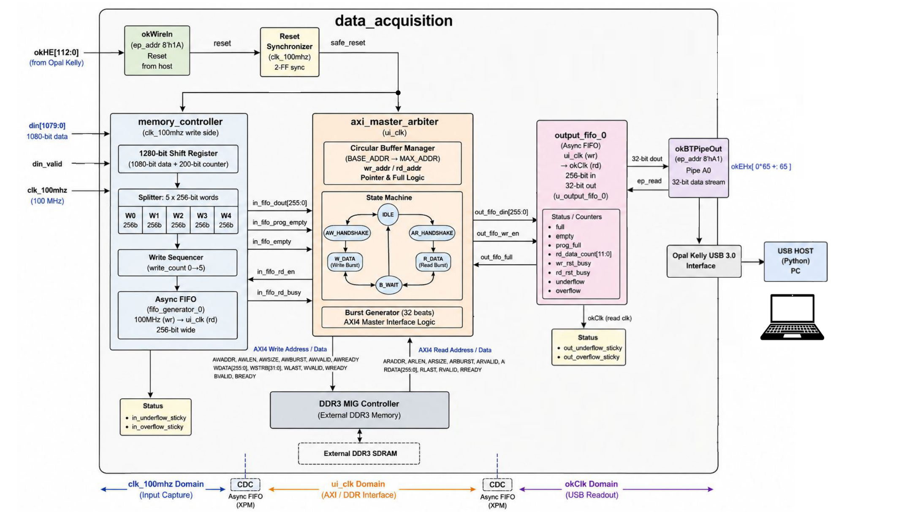
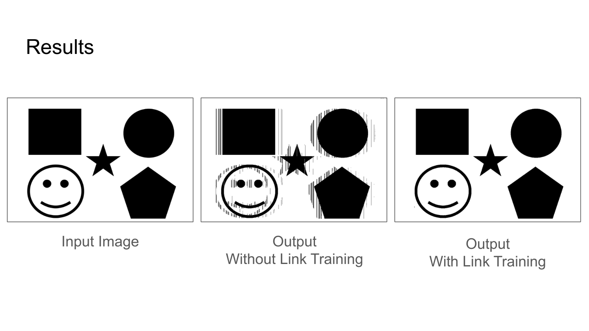

FPGA data acquisition
An FPGA acquisition pipeline that buffers sensor data in DDR3 and transfers it over USB, with custom AXI4 control and Python-based validation.
This project was completed as part of my summer research at the Intelligent Sensory Microsystems Laboratory at the University of Toronto. The source code cannot be shared.
The problem
In our lab, we needed to verify the results of link training by transmitting known data and analyszing the received data for the bit-error rate. However, the receiver was outputting 1080-bit data bursts every 80ns (13.5 Gbps), faster than the USB interface can read them (3.23 Gbp). I built a DDR3-buffered acquisition pipeline to separate capture from readout, allowing the Python host to retrieve a capture at its own pace.
The design connects a 1,080-bit input on a 100 MHz clock to a 32-bit Opal Kelly output clocked at 100.8 MHz. This allows the collection of a finite number of captures rather than making an indefinitely faster input sustainable.
System architecture
The datapath spans three clock domains: input capture, the 200 MHz DDR user interface, and USB readout. Two asynchronous FIFOs bridge them, with an AXI4 master arbiter coordinating access to the DDR3 MIG controller.

The Data Path
Gearbox: The input gearbox appends a 200-bit counter to each 1,080-bit sample, forming a 1,280-bit, or 160-byte, record. It splits that record into five 256-bit words over five cycles. The counter gives the host a way to check record continuity and identify missing or corrupted data.
Cross into the UI clock domain (memory): An asynchronous input FIFO carries those words from the capture clock into the DDR interface. A programmable-empty threshold on the fifo freezes the AXI master arbiter, preventing garbage data from being pushed into the system.
AXI Master Arbiter: I implemented an AXI4 master arbiter with read/write pointer management and burst handshakes. It prioritizes writes to protect incoming data and manages buffer addresses up to the 1 GiB limit. Once the DRAM is filled, the system freezes preventing overwriting data. This was acceptable since only a finite amount of data was required.
Opal Kelly Pipe Out to Host: An asymmetric output FIFO converts 256-bit memory words into 32-bit USB words (8:1). The Opal Kelly block-pipe endpoint waits for data to become available from the FIFO then pipes it out to the host.
Error Prevention and Detection
Reset synchronization, FIFO status checks, and latched underflow/overflow flags make boundary conditions observable. Each piece of incoming 1080 bit data from the sensor is padded with a 200 bit counter before being written to memory, totaling 160 bytes. On the host side, Python reconstructs the 160-byte records and checks the 200 starting bits to ensure bits have not been misaligned and data has not been missed. These checks are important because a stream can arrive without an obvious interface failure while still containing missing or misaligned records.
Results
The pipeline was able to collect 10,596,960 output bits and compare them against the input. Before link training, 548,641 bits differed, a 5.18% error rate. With link training, that fell to 599 bits, or 0.0057%. This was approximately a 99.9% reduction in error bits.
Below is a visual representation of the data collected. On the left is the image sent through the system, and the two images on the right were collected by the Data Acquisiton pipeline.

Summary
The work combined RTL design, AXI handshakes, clock-domain crossing, and Python scripting.